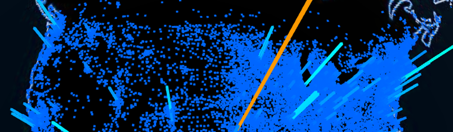

Earlier this year, Markit On Demand launched MOD Labs (MOD/L), a team whose aim is to enhance existing capabilities, create new solutions, and foster innovation across the organization. We recognize that innovation is as much the creation of original ideas as it is the recognition and dissemination of existing progressive concepts and methods within our broader organization. MOD/L aims to inform the working methods of MOD teams and to recognize innovative work from those teams as it happens.
Speed

Continuing our years of efforts to provide the fastest financial sites in the world, MOD/L is implementing the Google-created SPDY protocol across MOD's infrastructure, with a goal of reducing page and app load times by 25% across all devices and browsers.
Data Visualization
Led by our talented designers, MOD/L is working on new financial data visualizations, with the goal of improving user engagement with this complicated data and making it more accessible to a wider range of users.
Next-gen Interactive Charting
MOD/L is creating a new way of charting financial data; next gen charting will be faster and more engaging, will work across all platforms and will provide streaming charts.
Technical Analysis Pattern Recognition

MOD/L is creating a machine learning engine that can be fed particular technical analysis patterns, and identify new patterns as they arise on a particular security. This capability will enhance MOD’s existing charting, screener, and overall presentation of actionable investment ideas.
Content Personalization
MOD/L is working on a capability that will personalize the content and layout presented to a user, based on various attributes of the user's behavior, trading history, and research interests. For example, presenting a user only with the fundamentals and events relevant to their portfolio; creating a trail of their research and news interests, and emphasizing certain datasets or news providers; or presenting a layout and experience that’s more relevant to a retirement investor than a day trader.
F2
F2 is an open source toolkit for building websites in the financial services industry. F2 was the first project to graduate from the MOD/L process, and continues to be managed by the MOD/L team. To date in 2013, we have released nine versions of F2, providing additional documentation and bolstering functionality. MOD/L continues receive feedback from the F2 community, and those recommendations are shaping the F2 roadmap.
Idea Accelerator
Idea Accelerator is a framework to help any MOD employee take an idea from napkin sketch to full production implementation in as short a time as possible. The framework is intended to provide visibility, support and feedback, encourage lateral skills development, and ultimately, launch the best ideas MOD has to offer. Correspondingly, it outlines a means to stop an idea when it is not viable or is failing for any number of reasons, and it is the intent of this framework to make it safe for ideas and projects in this environment to fail.
- α (Alpha - Make It Work)
- β (Beta - Make Sure It's A Good Idea / MVP)
- Live (V1)